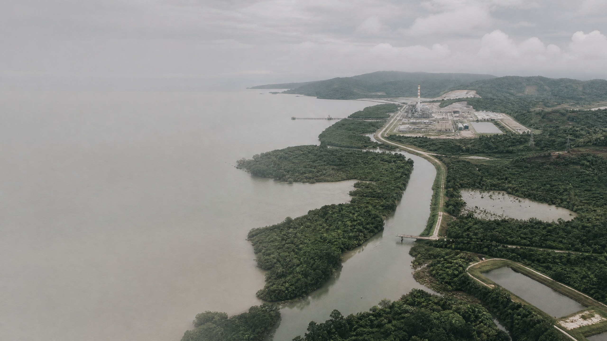
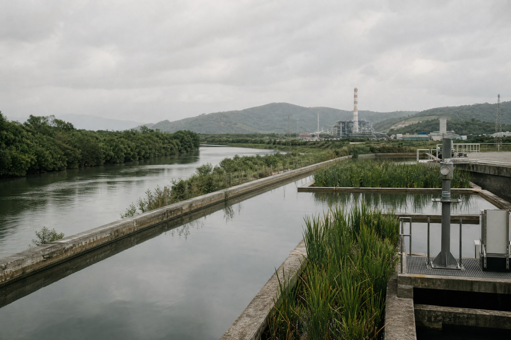
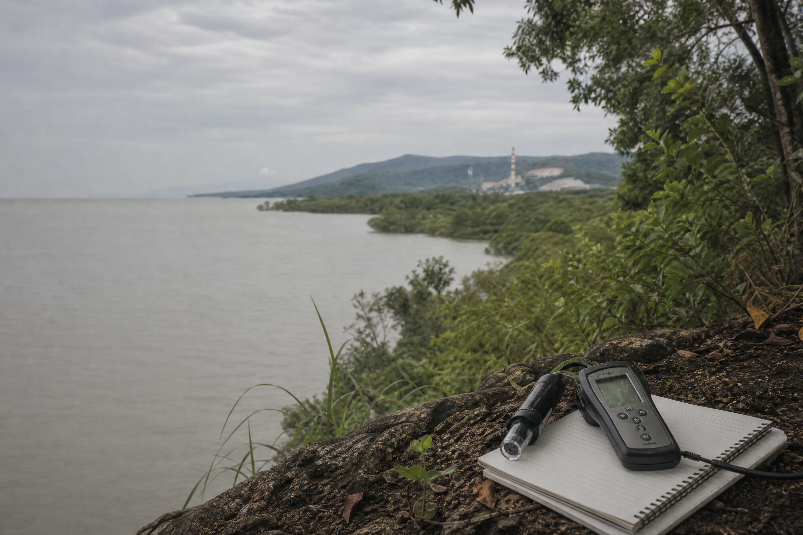

Proyek baru
Tersimpan di perangkat

Penapisan lingkungan / 01
Masukkan kegiatan, lokasi, kapasitas, dan proses. EnviroTrack membantu memetakan kewajiban, tugas, dan dokumen yang perlu disiapkan.
Cara kerja EnviroTrack
EnviroTrack menyusun data kegiatan menjadi gambaran kerja yang lebih mudah dibaca. Basis regulasi tetap bersifat umum. Konteks proyek hanya dipakai ketika kamu ingin melihat aturan dan pekerjaan yang terpicu.


Mulai atau lanjutkan
Mulai dari formulir kosong, lanjutkan workspace lokal, atau load save file dan bundle ZIP dari perangkat lain.
Data proyek dan dokumen disimpan lokal di browser atau folder yang kamu pilih. EnviroTrack tidak mengirim data ke AMDALNet atau OSS secara otomatis. Hapus data browser dari menu Dokumen; file yang sudah disalin ke folder perangkat tetap tidak terhapus.